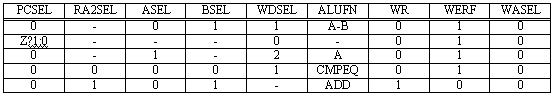
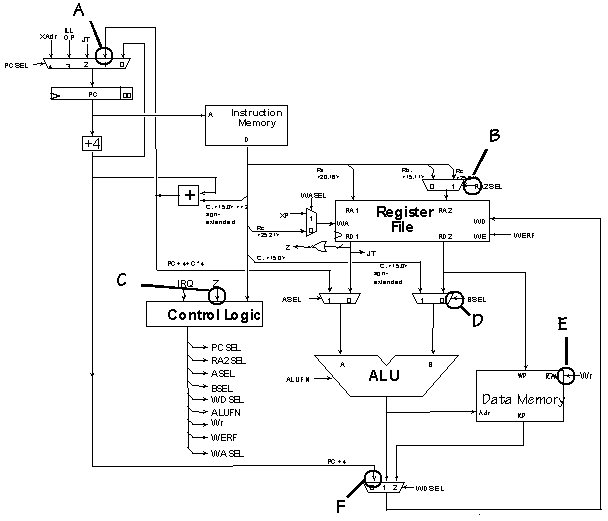
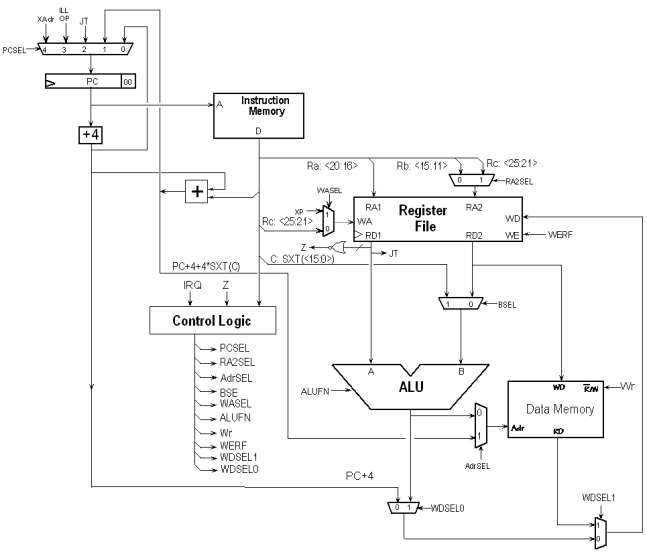

Building the Beta
Problem 1.
Beta quickies:
-
 In an unpipelined Beta implementation, when is the signal
RA2SEL set to "1"?
In an unpipelined Beta implementation, when is the signal
RA2SEL set to "1"?
-
In an unpipelined Beta implementation, when executing a
BR(foo,LP) instruction to call procedure foo, what should WDSEL should
be set to?
-
The minimum clock period of the unpipelined Beta implementation
is determined by the propagation delays of the data path elements and
the amount of time it takes for the control signals to become valid.
Which of the following select signals should become valid first in
order to ensure the smallest possible clock period: PCSEL, RA2SEL,
ASEL, BSEL, WDSEL, WASEL?
Problem 2.
Notta Kalew, a somewhat fumble-fingered lab assistant, has deleted the
opcode field from the following table describing the control logic of
an unpipelined Beta processor.

-
Help Notta out by identifying which Beta instruction is implemented by
each row of the table.
-
Notta notices that WASEL is always zero in this table. Explain
briefly under what circumstances WASEL would be non-zero.
-
Notta has noticed the following C code fragment appears frequently in the benchmarks:
int *p; /* Pointer to integer array */
int i,j; /* integer variables */
...
j = p[i]; /* access ith element of array */
The pointer variable p contains the address of a dynamically
allocated array of integers. The value of p[i] is stored at the
address Mem[p]+4*Mem[i] where p and i are locations containing the values of
the corresponding C variables. On a conventional Beta this code
fragment is translated to the following instruction sequence:
LD(...,R1) /* R1 contains p, the array base address */
LD(...,R2) /* R2 contains I, the array index */
...
SHLC(R2,2,R0) /* compute byte-addressed offset = 4*i */
ADD(R1,R0,R0) /* address of indexed element */
LD(R0,0,R3) /* fetch p[i] into R3 */
Notta proposes the addition of an LDX instruction that shortens the
last three instructions to
SHLC(R2,2,R0) /* compute byte-addressed offset = 4*i */
LDX(R0,R1,R3) /* fetch p[i] into R3 */
Give a register-transfer language description for the LDX
instruction. Examples of register-transfer language descriptions can
be for other Beta instructions in the Beta Documentation handed out in
lecture.
-
Using a table like the one above specify the control signals for the LDX opcode.
-
It occurs to Notta that adding an STX instruction would probably be
useful too. Using this new instruction, p[i] = j might compile into
the following instruction sequence:
SHLC(R2,2,R0) /* compute byte-addressed offset = 4*i */
STX(R3,R0,R1) /* R3 contains j, R1 contains p */
Briefly describe what modifications to the Beta datapath would be
necessary to be able to execute STX in a single cycle.
Problem 3.
One Beta manufacturer is having quality-control problems with their
design. In particular, they've had reliability issues with various
device connections that are circled in the attached diagram.
Your job is to write some test programs to help determine if a
machine is fault-free. Assume that when a device connection is
"faulty," the indicated bus or signal is always "stuck-at 0" instead
of the expected value. For each of the circled connections, write an
instruction sequence that when executed for a specified number of
cycles would indicate whether the connection was okay by leaving a "1"
in R0 and leaves some other value in R0 if the connection was faulty.
You can assume that all registers are reliably set to 0 before each
sequence is executed.
Give your instruction sequence for each of the six indicated faults
and briefly explain how each sequence detects the fault and produces
something besides "1" in R0 when the fault is present.

-
Fault A: Input 1 of PCSEL mux stuck at 0.
-
Fault B: RA2SEL mux control signal stuck at 0.
-
Fault C: Z input to control logic stuck at 0.
-
Fault D: BSEL mux control signal stuck at 0.
-
Fault E: WR memory control signal stuck at 0.
-
Fault F: Input 0 of WDSEL mux stuck at 0.
Problem 4.
Flaky Beta's, Inc. has an interesting business plan: they
buy -- very cheaply -- Beta processors manufactured by other companies
with slight defects and market them as implementing "variants" of the
Beta Instruction Set Architecture. FBI's plan is simply to change the
documentation of the instructions affected by the manufacturing flaws
in each machine, presuming that its customers can live with the
revised machine behavior.
The FB1 and FB2 are based on a non-pipelined Beta. They perform
exactly as a fully functional non- pipelined Beta (see diagrams at the
end of the quiz), except for the following flaws:
The FB1 has the select input to the ASEL mux stuck at 0, causing the register file to always be selected
as the A (left) input to the ALU.
The FB2 has the select input to the RA2SEL mux stuck at 0, causing
the Rb field of the instruction to always be selected as the RA2
(right) address input to the register file.
Note that, aside from the above flaws, the defective processors
behave identically to their fully-functional counterparts; control
signals, for example, are generated as for a working Beta processor.
FBI tests both the FB1 and FB2 on six Beta instructions: LDR, ST,
SUBC, BNE, LD and JMP. They find that each of the flaws affects only
one of the six instructions.
-
Which Beta instructions does the FB1 flaw affect? Which Beta
instructions are affected by FB2 flaw?
-
Of course many programs use all the instructions in the Beta ISA,
so clients need to know if it is possible to rewrite their programs so
that they perform the same computation whether they run on an unflawed
Beta or an FBI processor. It's okay if the rewritten program takes a
different number of instructions than the original. When answering
the questions below, assume that rewritten programs still fit in the
available memory.
Is it possible to rewrite an arbitrary program so that it will
perform correctly on both an unflawed Beta and an FB1?
-
Is it possible to rewrite an arbitrary program so that it will
perform correctly on both an unflawed Beta and an FB2?
Problem 5.
A 6.004 student, Pete Coshaver, has suggested the following modified
Beta design to minimize the critical path in his unpipelined
implementation.

-
Briefly describe the differences between the modified Beta shown
above and the Beta described in lecture.
-
Which instructions have their critical path reduced
as a result of Pete's modifications?
-
On a given instruction Pete's control logic generates the
following control signals. What is the most likely opcode of
instruction being executed?
PCSEL 0
RA2SEL -
BSEL 1
ALUFN +
Wr 0
WERF 1
WASEL 0
AdrSEL 0
WDSEL1 1
WDSEL0 -
-
What impact does Pete's redesign of the write-data-select
multiplexer (controlled by the WDSEL0 and WDSEL1 control lines) have
on the original Beta design?
- Pete's old Beta control ROM will not work with his modified Beta design
- It requires the BOOL unit of the ALU to be redesigned.
- It is most likely slower than the 3-input multiplexer used in the original Beta.
- It has no impact; it is functionally identical to the original design.
- Some standard Beta instructions can no longer be implemented with Pete's changes.
-
What is the most appropriate setting of the WDSEL0 and WDSEL1
control lines when executing a BEQ instruction?
-
Pete would like to connect the ASEL signal of his old Beta
design to the AdrSEL signal in his new design. For what Beta
instruction type is it necessary for Pete to change the contents of
his control ROM before his modified Beta will behave identical to the
original version?
-
Pete was also able to reduce the size of his control logic by
merging the functions of two signals into a single output signal. What
two signals, from the list given below, could he have merged?
a) WDSEL0 and WDSEL1
b) WDSEL0 and WERF
c) AdrSEL and WASEL
d) BSEL and RA2SEL
e) AdrSEL and WR
-
The minimum clock period of Pete's unpipelined Beta
implementation is determined by the propagation delays of the data
path elements and the amount of time it takes for the control signals
to become valid. Which select signal(s) should become
valid first in order to ensure the smallest possible clock period?
Problem 6.
Consider the following potential additions to the Beta Instruction set:
// Swap register contents with memory location
MSWP (Ra, literal, Rc)
PC <- PC + 4
EA <- Reg[Ra] + SEXT(literal)
tmp <- Mem[EA]
Mem[EA] <- Reg[Rc]
Reg[Rc] <- tmp
// Move if zero
MVZ (Ra, Rb, Rc)
PC <- PC + 4
if Reg[Ra] = 0 then Reg[Rc] <- Reg[Rb]
// Move constant if zero
MVZC (Ra, literal, Rc)
PC <- PC + 4
if Reg[Ra] = 0 then Reg[Rc] <- SEXT(literal)
-
Specify the control signals configurations needed to execute these
instructions on an unpipelined Beta.
-
Explain why the following instructions cannot be added to our Beta
instruction set without further modifications:
// Push Rc onto stack pointed to by Ra
PUSH(Rc, 4, Ra)
PC <- PC + 4
Mem[Reg[Ra]] <- Reg[Rc]
Reg[Ra] <- Reg[Ra] + 4
// Store indexed (base + index register)
STX(Ra, Rb, Rc)
PC <- PC + 4
Mem[Reg[Ra] + Reg[Rb]] <- Reg[Rc]